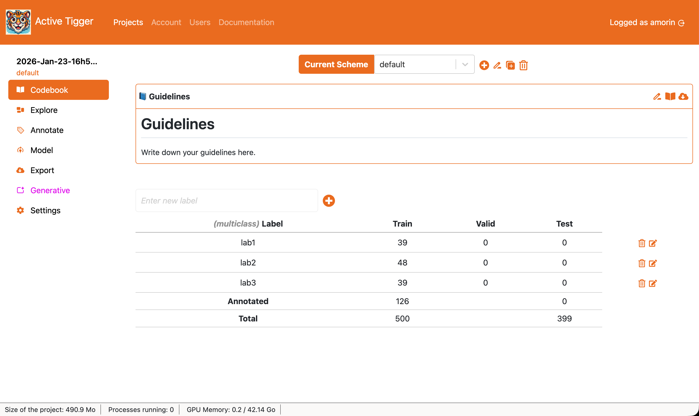

Codebook Page
This section describes the Codebook page, the key elements and their interactions with the rest of the application.

Scheme management
At the top of the screen, you will find the scheme (what is a scheme?) management component. It consists of a dropdown menu and 4 actions buttons.
- Current scheme: Scheme to use for the current session.
- to create a new scheme, with a unique name and a type (see available types)
- to rename the current scheme.
- to duplicate the current scheme with all annotations.
- to delete the current scheme and its annotations. This action cannot be undone.
Guidelines
Codebook allows to keep information on how to use the current scheme.
- to enter editing mode.
- to open the Codebook in a browser tab to access it during annotation.
- to download the Codebook as a markdown file.
Labels management
- New label name to create a new label.
- to delete the specific label
- to rename the specific label (renaming a label to the name of an existing label will result in merging existing annotations)
The table summarizes existing labels in the current scheme and the distribution of annotations for each dataset (train, validation and test). The rows can be re-ordered. Reordering rows will change the order of the labels in the Annotate Page